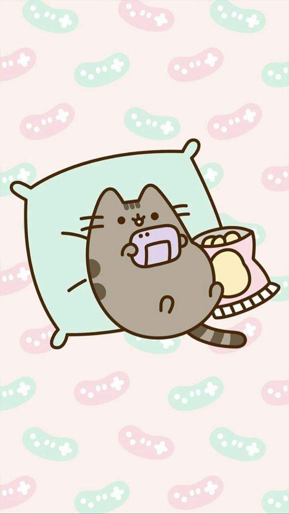

My Story
Homepage
Contact Us!
I'd like to talk about how I fell in love with my husband. After a long day of playing video games with friends,
it was getting really late and everyone started to leave the game party or get off for the night.
and soon it was just him and I alone in the party together. After a while, I blurted out that I was
really interested in him. That I liked him very much in a romantic way. I was so scared after I said that.
I had no idea what he felt and i was just waiting for a response from him. He was quiet for longer
than a normal pause. He said that he felt the same way that I did. I felt so relieved and happy. I never have felt so
nervous asking someone out like that. I was so happy that I started to cry a little. I had no idea why I was crying but I did.
I felt so happy to be in love with someone even though I never seen his face or met in real life.
